Ter uma banda de música ativa e respeitada ao longo de dois séculos, num concelho do interior, não é
apenas
um feito raro — é uma marca de identidade. É história viva. É obra construída com rigor, com
persistência e
com um amor à música que atravessa gerações.
Ao longo dos anos, muitas personalidades e inúmeras instituições reconheceram o valor desta casa.
Mas o
aplauso mais importante é o de Cabeceiras: o orgulho sereno de um povo que sabe o que esta Banda
representa
eo que tem sido capaz de manter, com dignidade, em todas as épocas.
A Banda Cabeceirense permanece firme porque sempre soube ser unida — como uma família, com amigos à
volta,
com gente que puxa por ela, e com quem nela encontra um lugar. A esse espírito soma-se o prestígio
que foi
conquistando e preservando, lado a lado com a formação contínua e a renovação dos seus músicos.
A maior força da Banda está, e sempre esteve, nas pessoas. Uma instituição não se sustenta em
paredes:
sustenta-se em vidas, em dedicação, em disciplina e em pertença. E aqui o sopro é melódico e
profundo —
tecido de geração em geração, precioso e sempre em construção.
Somos uma banda feita de todas as idades. Unimos gerações, partilhamos saberes e criamos laços
forjados a
compasso. E é por isso que, sendo a coletividade mais antiga do concelho, continuamos também a ser
uma
garantia clara de futuro.
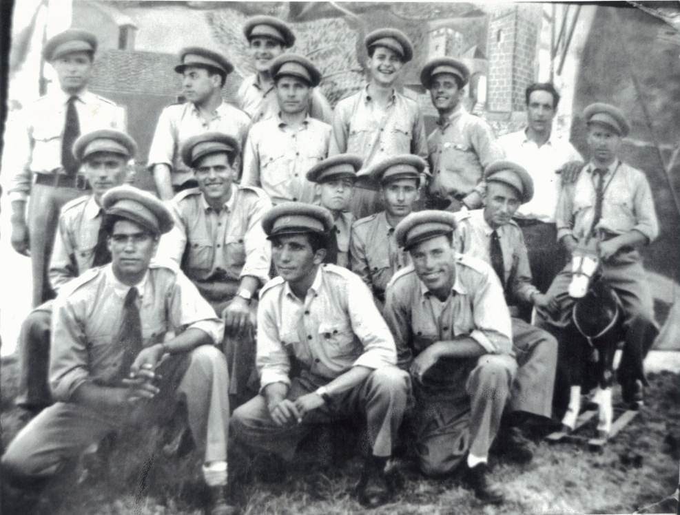
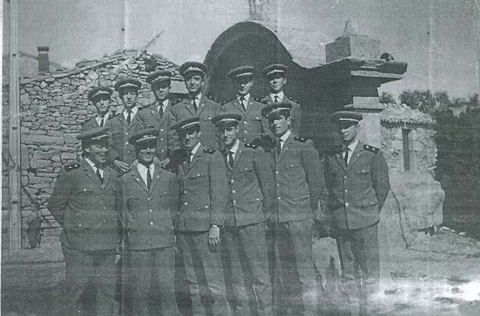
Fundada em 1820, a Banda Cabeceirense é a coletividade mais antiga do concelho e uma das
instituições
culturais com maior implantação nas Terras de Basto. Ao longo do seu percurso, conheceu períodos de
grande
afirmação, mas também fases exigentes, chegando a atravessar momentos de interrupção temporária da
atividade
— sempre com a capacidade de regressar e se reerguer.
Um dos marcos decisivos dessa renovação ocorreu em 1986. Com o impulso de músicos e de figuras
cabeceirenses ligadas à cultura e ao desporto, e com a colaboração da Câmara Municipal, a Banda
reencontrou
força, organização e rumo, superando um dos períodos mais difíceis da sua história. É também nesta
fase que
se consolida a criação da Escola de Música, cujo grande impulsionador, dinamizador e pedagogo foi o
contramestre Lourenço de Castro.
Em 1991, com o envolvimento da direção, de executantes, do Município e de várias personalidades do
concelho, foi possível angariar fundos para renovar o instrumental, reforçando as condições de
qualidade e
continuidade. Mais tarde, em 1999, a forte adesão de jovens à Escola de Música deu origem à Banda
Juvenil
Cabeceirense, composta por cerca de 40 jovens executantes, que desde então tem afirmado o seu valor
em
encontros de Bandas Juvenis e em concertos integrados na programação cultural do Município de
Cabeceiras de
Basto.
Ao longo de dois séculos, a Banda Cabeceirense marcou presença nas maiores romarias do Norte do país,
em
festivais filarmónicos, concertos em teatros, desfiles e em receções a altas individualidades,
incluindo o
Presidente da República, primeiros-ministros e secretários de Estado. O prestígio conquistado
assenta na
qualidade artística, no empenho e na postura que sempre distinguiu as suas atuações.
A sua história é também feita de maestros e de figuras marcantes. Entre muitos, destacam-se nomes
como
Amílcar Cunha, Serafim Aguiar, Joaquim Peixoto, José Machado, José Maciel, Gil Lopes, Armindo Nunes,
Paulo
Nunes, Hélder Vales, entre outros. E, acima de tudo, permanece a memória de António Mendes, regente
cabeceirense e referência maior da coletividade, homenageado publicamente com um busto junto à Casa
da
Música — edifício que hoje acolhe a sede da Banda Cabeceirense.
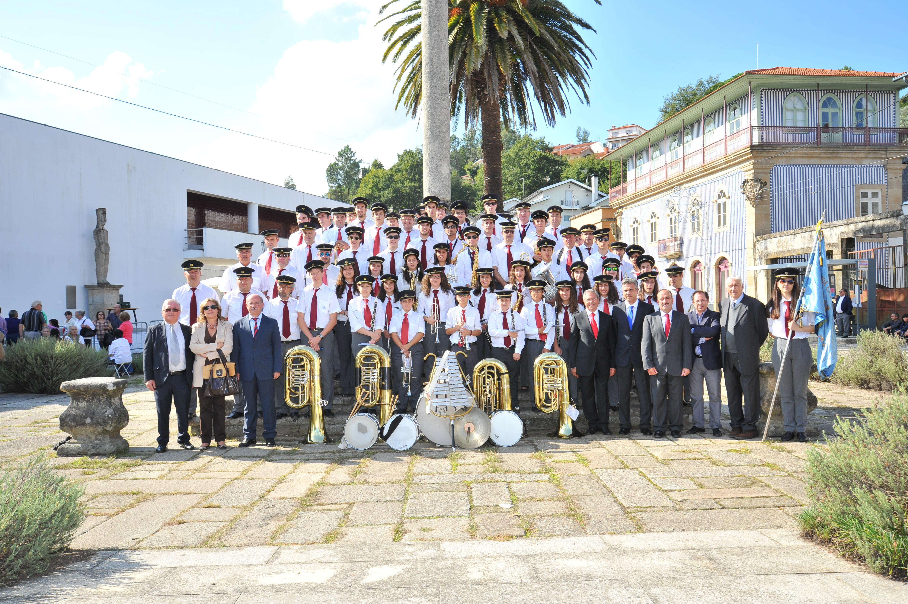
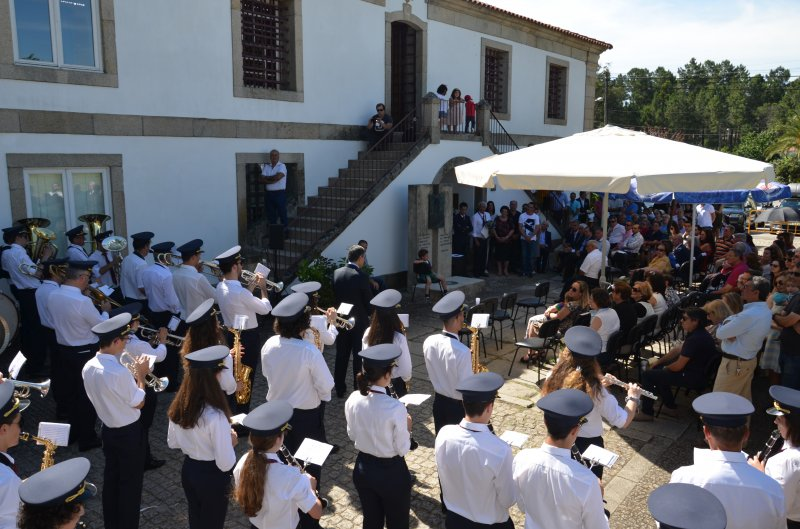
A Banda Cabeceirense tem a sua sede na Casa da Música de Cabeceiras de Basto, edifício
historicamente
conhecido como "Antiga Cadeia". Datada do século XVI e situada no lugar das Pereiras, na freguesia
de
Refojos, esta casa foi durante anos deixada ao abandono, até que o Município decidiu recuperar um
património
de inegável relevância histórica e pública.
No final da década de 90, a Câmara Municipal avançou com o processo de reabilitação, devolvendo
dignidade e
função cultural a um espaço emblemático da vila. As obras tiveram início em agosto de 2001 e
envolveram uma
intervenção cuidada e abrangente: recuperação exterior e do telhado, isolamento, tetos, portas e
janelas,
reorganização de espaços interiores, arranjos exteriores, criação de zona ajardinada e de lazer, e
melhoria
dos acessos.
A Casa da Música foi inaugurada em 2003. Desde
então, cumpre um propósito claro: apoiar e acolher atividade cultural ligada à música, servindo
igualmente
como sede social da Banda Cabeceirense — uma instituição bicentenária que continua a honrar e a
prestigiar o
nome de Cabeceiras de Basto.
Figuras marcantes
António Mendes
António Mendes está lembrado num busto colocado em frente ao edifício-sede da Banda
Cabeceirense. É amplamente
reconhecido como uma das figuras mais marcantes da nossa história — não apenas pela direção
musical, mas pelo papel
diário e incansável que assumiu na vida da instituição. Durante anos, foi ele quem segurou a
banda por dentro: chamou
e formou músicos, orientou ensaios e atuações, garantiu a preparação do serviço e acompanhou de
perto a organização
necessária para que tudo acontecesse.
Para além de regente e músico, António Mendes acumulava funções na antiga Cadeia de Cabeceiras
de Basto, sendo também
alfaiate nas horas vagas — um retrato de uma época em que a vida cultural se construía com
esforço e sentido de missão.
Em sinal de reconhecimento público, o Município homenageou-o em 2003, assinalando uma vida de
serviço à Banda
Cabeceirense. Esta informação encontra-se registada na edição do Diário do Minho de
23/10/2020, dedicada ao
bicentenário da Banda.
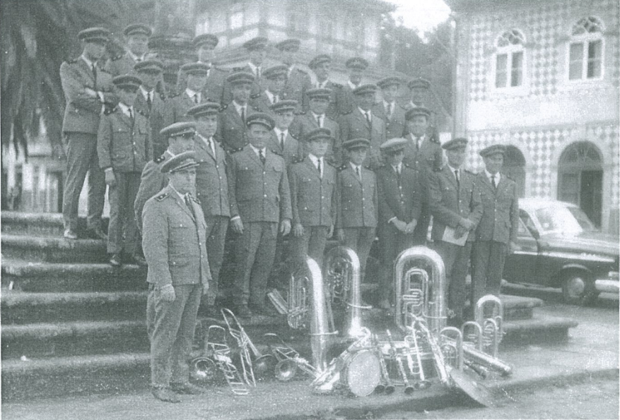
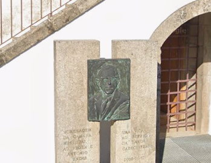
António Teixeira
António Teixeira foi um símbolo do que significa pertença e dedicação à Banda Cabeceirense. Ao
longo de mais de seis décadas de ligação à nossa instituição, deixou uma marca feita de
trabalho, disciplina e amor à música — uma ligação tão profunda que a Banda se tornou, para ele,
uma segunda casa e uma segunda família.
Entrou ainda muito jovem, pela mão do regente António Mendes, numa época em que a aprendizagem
se fazia com proximidade e exigência. Foi nesse ambiente que ganhou gosto pelo solfejo, pelos
primeiros sopros e pela rotina de ensaio. A Casa da Música, onde se ensinava e
vivia a Banda, ficou para sempre ligada à sua história: um lugar de memória, de formação e de
continuidade.
Como músico, destacou-se pelo talento e pela entrega com que tocava, ajudando a tornar
memoráveis concertos e momentos marcantes do percurso da Banda. A música acompanhou-o durante
quase toda a vida, com raras interrupções, e mesmo nesses períodos manteve sempre viva a ligação
à instituição. O seu compromisso não era ocasional: era constante, presente e visível.
Mas António Teixeira não marcou apenas pela música. Tinha uma capacidade de liderança e
organização invulgares, que se refletiu também no seu percurso profissional no Município. Com
responsabilidade direta sobre equipas operacionais, planeava, organizava e distribuía trabalho
com método, exigência e respeito. Liderava pelo exemplo: reconhecia em público, corrigia em
privado, e procurava extrair o melhor de cada pessoa, independentemente da função que
desempenhava. Essa forma de estar granjeou-lhe respeito genuíno e uma reputação sólida como
homem de trabalho e de princípios.
Na Banda, essa mesma postura traduziu-se numa dedicação silenciosa, mas decisiva: ajudava no que
fosse preciso, acompanhava o funcionamento interno e conhecia a casa por dentro, com a memória
de quem atravessou gerações, sedes, histórias e peripécias que hoje fazem parte do nosso
património humano. A sua presença era, para muitos, a certeza de que havia alguém que não
falhava.
António Teixeira partiu no início de 2024, deixando um vazio difícil de medir. Fica, no entanto,
um legado claro: o exemplo de serviço, de liderança com humanismo e de amor incondicional à
Banda Cabeceirense e a Cabeceiras de Basto. É recordado como um dos grandes cabeceirenses do seu
tempo — pela cultura que ajudou a sustentar, pelo impacto que deixou na vida da comunidade e
pela forma como elevou, em silêncio, o nome desta terra.
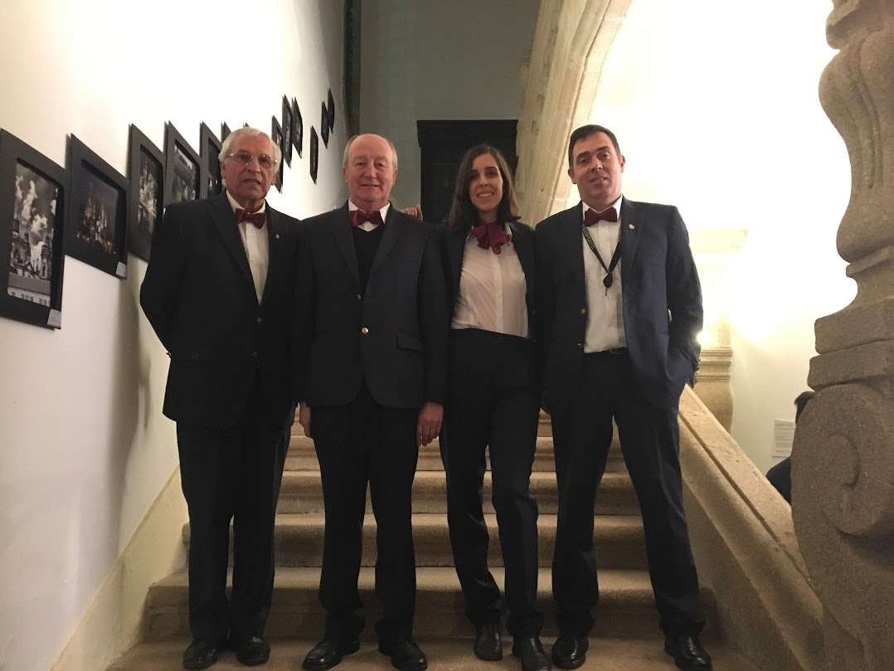
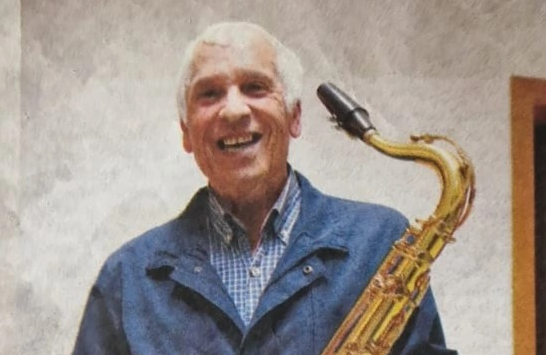
José Manuel Silva
José Manuel Silva é uma figura determinante na história recente da Banda Cabeceirense. Com
décadas de ligação à
instituição e uma presença ativa ao longo de vários anos nos órgãos sociais, assumiu a
Direção num período de
grande responsabilidade: a fase em que a Banda atingiu e celebrou o seu bicentenário,
carregando o peso de
representar uma casa com mais de dois séculos de memória.
A sua liderança ficou marcada por uma ideia simples e exigente: honrar o legado recebido e,
ao mesmo tempo,
preparar o futuro. Isso significou trabalhar com seriedade para dignificar a Banda,
valorizar os músicos, manter
a qualidade artística e continuar a formar novos elementos — porque uma filarmónica só se
mantém viva quando
consegue renovar-se sem perder identidade.
Também foi um tempo de desafios práticos. A dinâmica das festas mudou e a sustentabilidade
passou a exigir mais
trabalho de bastidores: diálogo com comissões, gestão de agendas, defesa de condições justas
e procura de apoios.
Entre saídas, quotizações, beneméritos e apoio municipal, tornou-se claro que a estabilidade
financeira depende
tanto da reputação artística como da capacidade de mobilizar a comunidade e reforçar o
número de associados.
O bicentenário trouxe um orgulho imenso, mas ficou inevitavelmente marcado pela pandemia,
que travou iniciativas
e impediu que muitos momentos planeados ganhassem vida como mereciam. Ainda assim, a
instituição não parou: a
continuidade manteve-se como prioridade, com o foco na formação, na dignidade do serviço
musical e na ligação à
população.
No termo do seu ciclo na Direção, José Manuel Silva passou o testemunho a uma nova geração
liderada por Luís Rodrigues e
permaneceu ligado à
Banda em funções de Presidente da Assembleia, assegurando estabilidade e continuidade numa
fase de
transição. É esse equilíbrio
— entre experiência, entrega e compromisso — que faz dele uma das figuras marcantes do nosso
percurso.
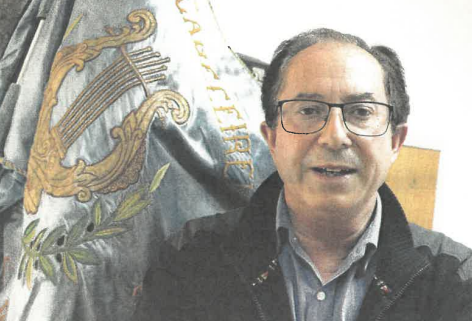
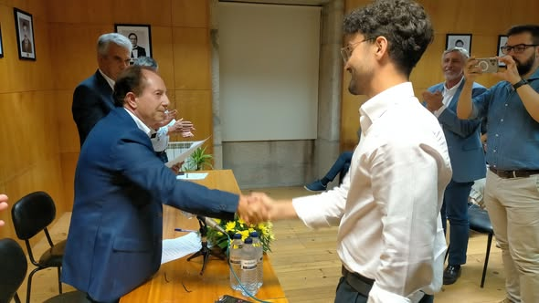
Músicos com origem na Banda Cabeceirense
A Banda Cabeceirense e a sua Escola de Música têm sido, ao longo de décadas, ponto de partida para
músicos que hoje
seguem percursos profissionais em Portugal e no estrangeiro. Este legado formativo — feito de
trabalho, método e
exigência — é uma das maiores provas de continuidade da instituição.
Adriana Ferreira
Adriana Ferreira, natural de Cabeceiras de Basto, é um dos nomes portugueses de maior projeção
internacional na
flauta. O seu percurso combina uma base sólida, construída desde cedo, com formação em
instituições de referência
na Europa, e um histórico de distinções que a colocou entre a elite mundial do instrumento.
No plano artístico, destacou-se em competições internacionais de grande prestígio, com prémios
que a projetaram
rapidamente para os grandes palcos. Paralelamente, construiu um percurso orquestral ao mais alto
nível, com passagem
por Paris e Roterdão, até assumir funções de primeira linha em Roma.
Hoje, a sua carreira é um exemplo claro do que uma escola de música e uma banda podem fazer
quando dão aos jovens
uma base séria: abrir portas, criar disciplina e formar músicos capazes de competir no topo.
Carlos Leite, trompetista natural de Cabeceiras de Basto, iniciou o seu percurso musical ainda
criança e cedo se
destacou pela consistência e pela ambição artística. A sua formação passou por escolas de
referência, com um
caminho marcado por concursos, prémios e experiências internacionais.
A dimensão internacional surge reforçada por períodos de estudo e contacto com diferentes
escolas europeias, e por
participação em projetos exigentes como a Orquestra de Jovens da União Europeia. Em paralelo, a
sua carreira foi
somando colaborações com formações de grande nível, mostrando maturidade artística e uma
identidade sonora própria.
O seu percurso culmina na integração na Orquestra Gulbenkian após audição, um marco que traduz
mérito e qualidade
ao mais alto nível — e que honra a escola de onde muitos começam: a casa, o estudo, e o
compromisso com a música.
André Gomes é natural de Cabeceiras de Basto e iniciou os estudos musicais na Banda
Cabeceirense, na trompa.
Seguiu depois um percurso académico e artístico orientado para o universo orquestral, sustentado
por formação
superior e por um trabalho contínuo de aperfeiçoamento.
Ao longo do seu caminho, colaborou com várias orquestras e projetos em Portugal e no
estrangeiro, cruzando-se com
maestros e músicos de referência. O seu currículo reflete a exigência do instrumento e a
necessidade de um perfil
técnico consistente para responder a repertórios e contextos profissionais distintos.
A informação pública disponível aponta-o como ligado atualmente à Orquestra do Algarve, mantendo
uma presença ativa
em contextos sinfónicos e de concerto, o que reforça a ideia de continuidade: da Banda local
para palcos cada vez
mais exigentes.
Hélder Gonçalves, cabeceirense, iniciou o seu percurso na escola da Banda Cabeceirense e
desenvolveu carreira como
clarinetista, maestro e professor. A sua formação inclui licenciaturas em Clarinete e Direção de
Orquestra, bem como
especializações e estudo avançado de direção, refletindo um perfil técnico e artístico de grande
abrangência.
No plano profissional, mantém ligação a contextos institucionais e pedagógicos, lecionando em
conservatórios e
trabalhando na formação de novos músicos. Em paralelo, está associado à Guarda Nacional
Republicana em contexto de
banda/orquestra, e exerce funções de direção artística e maestro em contexto filarmónico.
A sua trajetória reforça a ponte entre formação local e responsabilidade nacional: quem começa
numa escola de música
pode crescer e chegar a funções onde a exigência artística e o serviço público se encontram.
Pedro Leite Teixeira iniciou o seu percurso musical ainda muito jovem ao integrar a Banda
Filarmónica de Cabeceiras
de Basto. Desde cedo, o saxofone tornou-se o centro do seu caminho artístico, levando-o a
aprofundar estudos e a
construir experiência em ambientes de elevada exigência fora de Portugal.
Em França, surge associado a instituições e estruturas ligadas ao ensino e à performance,
incluindo ligação ao
Conservatoire Paul Dukas e a contextos formativos superiores em Paris. A sua atividade tem
presença pública em
iniciativas ligadas à comunidade saxofonística, bem como em projetos e participações artísticas
que mantêm o seu
nome ativo no meio.
Este percurso ilustra bem o valor de uma base construída na Banda: disciplina, rotina e
identidade musical que,
com trabalho e ambição, se transforma em carreira e presença internacional.
Palavras que nos honram e ajudam a contar esta história.
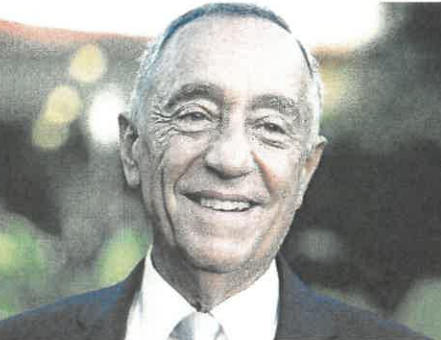
Marcelo Rebelo de SousaEx-Presidente da República Portuguesa
“Caros membros da Banda Cabeceirense,
Caríssimos amigos de Cabeceiras de Basto,
Felicito-vos pelo bicentenário que estão a comemorar. Duzentos anos é sempre uma data
invulgar em
qualquer iniciativa, empreendimento ou instituição. E no caso da vossa Banda esse
período de tempo vai
desde 1820, atravessa vários regimes, económicos, políticos e sociais, anos bons e anos
menos bons,
continuidades e interrupções, triunfos, também desfalecimentos, recomeços, depois de
desânimos. A
coletividade mais antiga do concelho, a Banda Cabeceirense foi nas últimas décadas
devidamente
acarinhada pelo Município, e, o que é mais importante, pelos munícipes, o que vos
permitiu um trabalho
constante de formação, divulgação artística, incluindo a Escola de Música e a Banda
Juvenil. E mais do
que isso, a promoção de Cabeceiras de Basto em eventos musicais, religiosos ou oficiais.
Que o vosso empenho continue inalvável, que a vossa energia não se esgote, que continuem
a formar
músicos, que prossigam o levar a música às pessoas, a toda a sociedade, envolvendo a
comunidade como
um todo, prolongando estes dois séculos, de grandes sucessos, num futuro promissor. É
esse o meu voto,
vindo como venho também das terras de Basto. É esse o meu voto como Presidente da
República
Portuguesa.”
Padre Manuel BatistaArcipreste de Cabeceiras de Basto
"A Banda Cabeceirense encerra «um capital de saber e de arte de imenso valor» para o
concelho de
Cabeceiras de Basto. A formulação é do padre Manuel Batista, responsável pelas paróquias
de Refojos,
Outeiro e Painzela, que sublinha que a filarmónica empresta sempre um brilho especial a
todas as
grandes festividades religiosas.
A Banda Cabeceirense «está sempre ligada a todas as nossas festas religiosas, as
procissões, as
principais festas do concelho, os momentos altos no Mosteiro de Refojos. Ou seja, as
grandes festas
religiosas de Cabeceiras contam sempre com a presença da banda», valoriza o pároco
Manuel Batista,
destacando que a filarmónica abrilhanta, ainda e sempre, o dia de Páscoa em cada uma das
paróquias do
concelho.
O também Arcipreste de Cabeceiras de Basto destaca que o recolher das cruzes, no
Mosteiro de Refojos,
ganha mesmo uma «extraordinária solenidade» pela atuação do coletivo, juntando em seu
redor largas
centenas de populares.
«A Banda Cabeceirense é, sem dúvida, um dos parceiros mais importantes na ação do
Arciprestado e que
empresta sempre um especial brilho às nossas celebrações religiosas»
«Todos temos um imenso orgulho» numa instituição que «continua a educar na sensibilidade
e na arte os
nossos jovens», resume o sacerdote, valorizando que a formação que a Banda Cabeceirense
dá aos jovens
do concelho contribui para enriquecer individualmente a população, mas também contribui
para,
consequentemente, «enriquecer a nossa catequese, a liturgia das paróquias e muitos
outros momentos».
«Muitas vezes, o contributo de um, dois ou três elementos da banda em algumas
celebrações faz muita
diferença e empresta sempre uma riqueza acrescida ao canto ou aos grupos corais»,
ilustra.
Um concelho rural do interior que tem «muita gente com formação musical» constitui, de
facto, um
grande capital que se fortalece em laços estreitos entre muita gente e várias
instituições. «Existe
uma relação muito boa entre a Banda Cabeceirense e a paróquia de Refojos, bem como entre
várias outras
instituições do concelho. No Mosteiro de Refojos há sempre concertos de Natal e de
Páscoa, com
repertórios especiais, mas também se trabalham outros momentos especiais em colaboração.
Este ano, por
exemplo, estava-se a preparar um concerto especial para a Semana Santa, em articulação
com a banda e o
grupo de teatro da Câmara Municipal, mas infelizmente, devido à pandemia, não se pôde
realizar»,
suporta e lamenta o padre Manuel Batista.
Evidenciando o orgulho e o apreço que a população nutre pela coletividade, o Arcipreste
de Cabeceiras
de Basto resume que «apesar de o Mosteiro de Refojos ser grande, sempre que lá atua a
Banda
Cabeceirense o monumento torna-se sempre muito pequeno, porque, de facto, a banda é
muito acarinhada
pelas pessoas», observa. E não se pense que é apenas a gente do concelho que aplaude e
se move para
ver a filarmónica atuar, porque «eu sou de Barcelos e todos os anos vejo aqui gente de
Barcelos que
vem de propósito para ver a nossa banda tocar», assinala o sacerdote."
“O meu nome é Adriana Ferreira e sou natural de Cabeceiras de Basto. Iniciei os meus
estudos de flautim e flauta
transversal na Banda Cabeceirense e, se hoje sou flautista profissional, solista da
Orquestra da Accademia Nazionale
di Santa Cecilia, de Roma, é também em grande parte à Banda Cabeceirense, a qual
agradeço muito. Portanto, gostaria
de desejar um feliz aniversário à coletividade mais antiga do nosso concelho e que
cumpra este ano duzentos anos de
existência. Espero que a Banda Cabeceirense cumpra muitos anos mais. Feliz aniversário.”
Luís Teixeira de SousaSócio benemérito e ex-dirigente
“Poucos podem gabar-se de ter uma Marcha com o seu nome. Luís Teixeira de Sousa pode
orgulhar-se disso. Foi um
presente de gratidão do maestro Armindo Nunes, por ocasião do seu septuagésimo
aniversário. Uma das melhores prendas
que recebeu na vida.
Quando o homem a quem deu teto e comida durante treze anos, todos os fins de semana, em
sua casa, lhe entregou uma
caixa grande, tipo embrulho de aniversário, Luís Teixeira de Sousa, mais conhecido por
Luís do Outeirinho, atirou-lhe
à queima-roupa: «porra, maestro, outra camisa?». Desconcertado, o ex-maestro da Banda
Cabeceirense apressou-se a
pedir «desembrulhe, se faz favor, abra e veja». Luís abriu e viu uma partitura envolta
num laço, «coisa fina», como o
homem que lha ofertou. E depois de ouvir entoar a Marcha que ostenta o seu nome,
rendeu-se: «é mesmo muito bonita».
Luís Teixeira de Sousa continua a emprestar os seus préstimos à Banda Cabeceirense, no
cargo de presidente da
Assembleia Geral, mas já conta três décadas de dedicação e filantropia. O também sócio
benemérito é de uma generosidade
incalculável. «Ajudo-os muito e aí gastei muita massa com eles, mas gosto. Muitas vezes
fazemos aqui umas patuscadas na
quinta e eles ficam todos contentes», ilustra. Ninguém nas gerações que o antecederam
tinha ligação à associação ou às
lides musicais, mas hoje já conta com três netos na banda. «Olhe, foi o maestro Armindo
Nunes que os incentivou, porque
pegava neles ao colo aqui em casa e ia-os ensinando. Ganharam gosto e lá estão»,
regista, orgulhoso e grato ao professor
que também tem como «bom amigo».
Ao longo de três décadas, sempre que as festas fugiam para o barato, o Luís do
Outeirinho ajudava às despesas. «Eu ía
sempre com a banda para todo o lado e, muitas vezes, ía na frente das procissões. Muito
eu gostava daquilo. E até lhe
digo, uma festa que tenha uma procissão e que não tenha uma banda na frente não tem
piada nenhuma, porque uma banda na
frente de uma procissão, cuidado, é outra música. É uma coisa bonita, digna, como deve
ser», sentencia.
A simplicidade e benignidade que ostenta contrastam com a exigência que coloca nas
coisas. «Não gosto de muitos bonés e
gente que está ali só a empalhar. Gosto de uma banda bem trajada, bem equipada e bem
preparada, a disputar com as melhores.
Isso enche-me de orgulho, saber que temos uma banda que toca música a sério com bons
músicos a sério», ajuíza e reconhece.
De resto, assegura, «a nossa banda orgulha muito o concelho todo, porque está muito bem
cotada e os 200 anos dão-lhe também
muito valor».
Ouvir bandas de música é um gosto que acalenta, mas a Cabeceirense não tem par. «A nossa
banda é sempre a nossa banda, não
há nada igual. Pode haver parecido, mas igual não há», afiança, enquanto aponta e exibe
as imensas fotografias que decoram as
paredes de casa, numa significativa «coleção de momentos gratos e reconfortantes». Isto
a fim de orgulhar os netos que
integram a filarmónica.
A poucos meses de completar 80 anos de idade, Luís quer entregar a pasta de dirigente a
outros. Mas, com uma importante
salvaguarda: «deixo a direção, mas nunca deixo a Banda. Isso nunca, enquanto for vivo.
Hei-de estar sempre e ir ver sempre
a todo o lado que possa», garante.”
Testemunhos com base em publicação de imprensa regional. Para leitura integral, consultar a
referência
(PDF).
Este texto foi elaborado com base em registos e referências provenientes do Município de Cabeceiras de
Basto,
imprensa regional e fontes histórico-culturais.